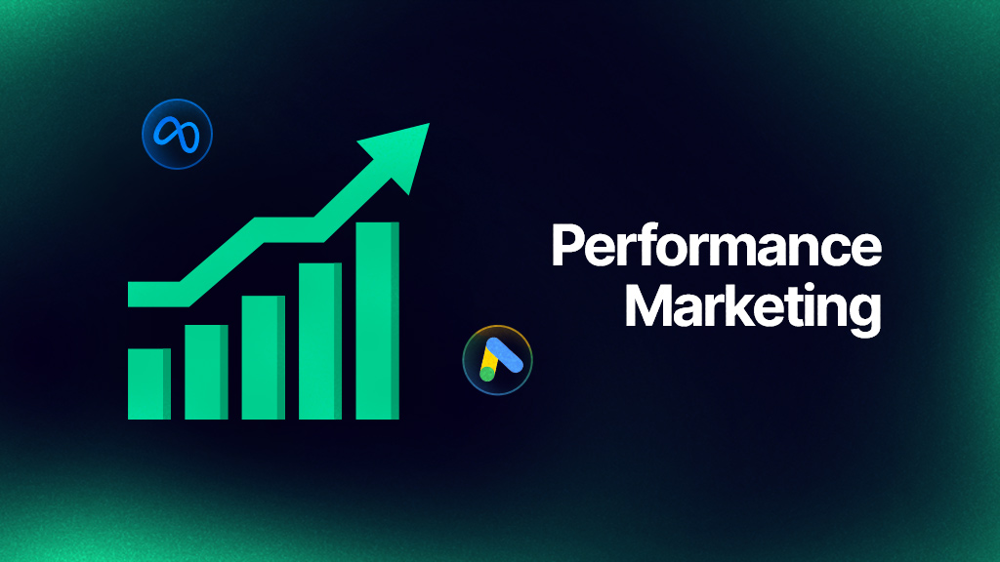

Drive measurable results with performance marketing strategies that maximize ROI through targeted advertising, conversion optimization, and real-time analytics across all digital channels.

Performance Marketing is a data-driven digital marketing approach where campaigns are optimized based on real results such as leads, sales, conversions, and return on investment (ROI).
Every advertisement is tracked, analyzed, and improved continuously to maximize business outcomes and minimize wasted ad spend.
Unlike traditional advertising, performance marketing ensures that you only invest in strategies that deliver measurable growth.
Advanced targeting, A/B testing, and funnel optimization ensure that your campaigns reach high-intent audiences ready to convert.
By monitoring customer behavior and conversion data, we continuously refine campaigns for higher profitability.
Real-time analytics help scale winning campaigns and eliminate underperforming strategies instantly.